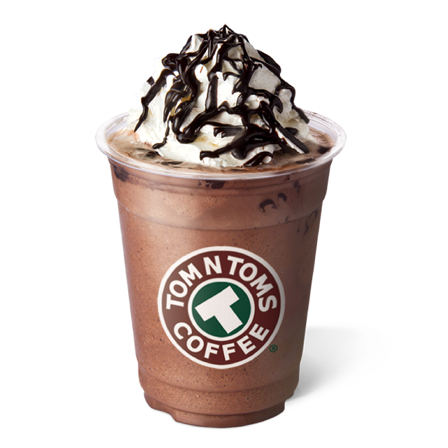

Tom N Tom
TOM N TOMS is the cultural space and people filled the sensibility with aromatic coffee. We was open the first store in Apgujeong-dong in the beginning of 2001 which is coffee house culture was born and keep pride as local coffee shop brand until now. To serve best coffee to our valuable customer, we have established coffee roasting factory, coffee academy and strengthen competitiveness for taste and goods quality by make pretzel in the store. shop brand until now.
Now, TOM N TOMS try to expanding our vison to oversea. We spread our original coffee culture to United States, China, Thailand, Mongolia, Australia and other overseas markets. We believe that a cup of coffee has a power of touching people and create a story. We will try our best to be a great space can be friends with a cup of coffee whenever and wherever. Hope you refresh your body and soul in TOM N TOMS. Australia and other overseas markets. We believe that a cup of coffee has a power of touching people and create a story.
